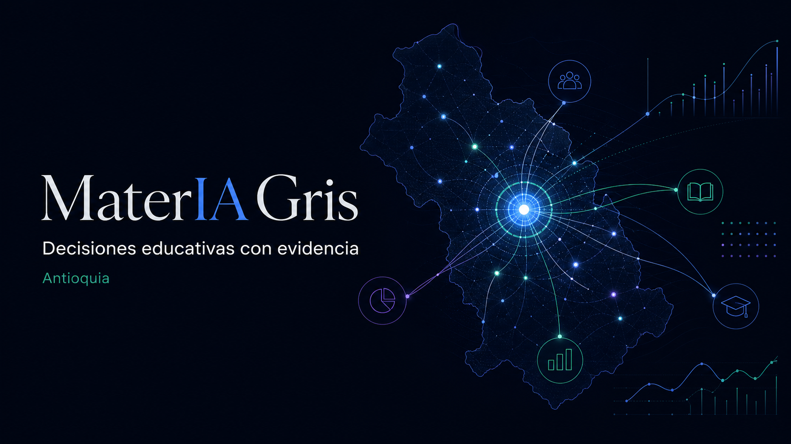

Gobierno territorial · AntioquiaSNIES 2024-II · señales 2025–2026
MaterIA Gris conecta la antesala escolar (preescolar a media y SENA), territorio, instituciones, calidad, empleo, investigación, finanzas, financiación del estudiante y conversación digital para revelar cómo está cambiando la educación del departamento — con evidencia verificable, sus vacíos declarados y una lectura humana.

Configure quién decide, qué necesita resolver y en qué territorio. MaterIA organiza señales existentes, explicita el dato que falta y produce un brief reutilizable; no fabrica una recomendación automática ni sustituye la deliberación.
Evidencia trazable · estado localUna lectura priorizada para rectorías, consejos directivos, equipos de planeación y gobiernos territoriales. Separa cifras consolidadas, señales administrativas recientes y recomendaciones editoriales para evitar decisiones basadas en un indicador aislado.
El sistema sumó 16.846 matrículas frente al semestre pico de 2023, impulsado principalmente por el sector oficial.
74 de los 125 municipios no registran programas con matrícula. Presencia institucional no equivale a cobertura de residentes.
La matrícula TyT cayó de 112.129 a 80.135 desde 2018, mientras la universitaria creció 6,8 %.
La población de 17 a 21 años pasaría de 541.548 a 469.972. Crecer exigirá atraer, retener y flexibilizar, no solo abrir cupos.
La evidencia cambia de valor según la responsabilidad de quien la usa.
Una cadena de evidencia para localizar dónde intervenir: aspiración, acceso, permanencia, aprendizaje, graduación y vinculación. Cada etapa declara su propio universo y territorio; no representa una misma cohorte ni debe multiplicarse como un embudo.
SNIES, S1 + S2. Son registros de solicitud, no personas únicas: una persona puede inscribirse varias veces.
SNIES 2024. Es una razón administrativa, no la tasa oficial de tránsito inmediato ni una probabilidad individual.
SPADIES, cierre estadístico 2024. Ausencia intersemestral: 12,40 %. La extracción comparable de Antioquia está pendiente.
ICFES 2025, n = 30.810. Promedio de evaluados en IES del departamento; no es valor agregado institucional.
OTE–MEN. En TyT fue 36,6 %. Son referentes nacionales, no tasas de graduación de Antioquia.
OLE 2023, graduados 2022. Cotizar formalmente no equivale a estar empleado; se excluyen SENA y UNAD.
11.539 bachilleres ingresaron directamente. No representa el resto del departamento.
Saber TyT 2017–2022. Señal de composición entre evaluados, no toda la matrícula.
SNIES 2024-II. Ausencia de oferta local no significa ausencia de estudiantes residentes.
Proantioquia: 55 organizaciones y 297 iniciativas en todos los niveles. Es inversión reportada, no impacto probado.
Una capa curada y reutilizable de evidencia sobre Antioquia: educación superior, transición desde la media, infraestructura, calidad, investigación e inversión. Cada cifra declara su corte, territorio, universo, fuente y limitación antes de entrar a una decisión.
MaterIA no obliga a que todas las fuentes parezcan del mismo año. El corte SNIES 2024-II sigue siendo la base comparable; las publicaciones 2025–2026 se muestran como señales administrativas, programas o contexto, sin sumarlas a la matrícula.
Matrícula en programas ofertados en Antioquia según las bases consolidadas del SNIES, 2018–2024 (semestre pico de cada vigencia).
Estudiantes matriculados por nivel de formación.
Incluye especializaciones universitarias, médico-quirúrgicas y técnico-tecnológicas.
Instituciones oficiales y privadas, todos los niveles.
Presencial, virtual, a distancia y combinadas.
Matrícula total (todos los niveles, semestre pico) de los cinco departamentos con más estudiantes, indexada a su propio nivel de 2018 para hacerlas comparables. Cálculo propio sobre las bases consolidadas nacionales del SNIES (scripts/benchmark_deptos.py). Atlántico (+6,5 % a 2024, 139.393 estudiantes) se omite de la gráfica por legibilidad. En 2024: Bogotá 863.337 · Antioquia 313.583 · Valle 186.364 · Santander 124.145.
La lectura incómoda: mientras Bogotá ya supera en +11,2 % su matrícula de 2018 y Valle y Atlántico también la superaron, Antioquia sigue 5,6 % por debajo — la brecha más grande entre los departamentos grandes (Santander: −1,7 %). El repunte 2024 (+5,7 %) apenas empieza a cerrarla.
Indicadores administrativos oficiales 2025–2027. Complementan al SNIES, pero no sustituyen sus cifras estadísticas de matrícula.
Cómo se calcularon las dos cifras derivadas: $92,8 mil millones suma Arboletes UdeA, El Bagre Pascual Bravo, laboratorios IU Digital, UNAL Rionegro, bloque 14 de la IUE y complejo deportivo del Poli JIC; 5.607 suma únicamente los proyectos para los cuales el MEN publicó número de puestos. Corte de verificación: 14 de julio de 2026.
El MEN publicó el agregado nacional SNIES 2025 el 15 de julio de 2026, pero la base consolidada descargable por departamento todavía no aparece — estas son señales 2026 verificadas documento por documento, con alcance y fuente propios.
El SENA Antioquia abre el año con 9.552 cupos en su primera convocatoria (luego vendrían 7.350 y 8.370 más).
ITM: 29.822 matriculados en 2026-1 en el corte consolidado del Distrito al 28 de febrero; la IU de Envigado llega a 8.369 (+23,1 %, la que más acelera). El MEN reporta 930.000 beneficiarios de gratuidad y fija meta de más de 950.000 para 2026.
El TdeA cierra su plan de desarrollo con 23.863 matriculados en 2026-1 (+93 % desde 2022). QS por materia: Medicina de la UdeA, #1 de Colombia y top 10 de Latinoamérica.
U-Sapiens 2026-1: la UdeA se sostiene como #2 nacional en investigación (cuartil 1). Temporada de rendiciones de cuentas 2025: ITM, Pascual Bravo y Colmayor reportan récords de matrícula.
El ICETEX abre 12.900 créditos nuevos para 2026-2 — recuperación parcial tras el desplome de −83,6 % en 2025. Visita de pares para la renovación de la acreditación del Politécnico JIC.
EAFIT logra la acreditación por 10 años (Res. 016360, primera privada de Antioquia con la vigencia máxima). El MEN detalla $92,8 mil millones en seis proyectos de infraestructura antioqueños. Decreto 0616: gratuidad progresiva en derechos de grado desde 2026-2; hasta tres inscripciones gratuitas empezarán en 2027-1 para población elegible.
El DANE confirma que Antioquia creció 3,0 % en 2025 (segunda economía, 15 % del PIB nacional). La U. Católica Luis Amigó publica su informe 2025: 13.232 estudiantes, −21 % desde 2020. Desempleo de Medellín A.M.: 8,6 %.
Base departamental SNIES 2025 (el agregado nacional ya fue publicado; este tablero se actualizará cuando exista el archivo consolidado); resolución de cinco renovaciones de acreditación antioqueñas (Colmayor, Poli JIC, CEIPA, UNAULA, IUE); rendición de cuentas del SENA (oct-nov).
El embudo de la educación superior no empieza en «aspirar»: empieza en preescolar. Esta sección abre el tablero hacia atrás — matrícula de preescolar, básica y media (MEN, corte municipal), los bachilleres que produce el departamento cada año y la formación del SENA — con la misma regla de siempre: universo, corte y cautela declarados en cada cifra.
Estudiantes matriculados por nivel, sectores oficial y no oficial (MEN, anexo por municipio; los ciclos de adultos se asignan a su nivel equivalente). En 2024: 1.148.645 estudiantes — 250 mil menos que en 2011 (−17,9 %). La caída no es de cobertura (la neta se sostiene cerca del 90 %): es demográfica. El dataset del MEN no publica el año 2018.
Porcentaje de la población en edad de cada nivel que está matriculada en ese nivel (fila departamental oficial del MEN). En 2024 la primaria cubre el 87,3 % — la media, el 52,8 %: uno de cada dos jóvenes en edad de cursarla no la cursa. El salto 2017→2018 es un artefacto del denominador (el MEN reestimó la población con el Censo 2018), no una mejora real.
Estudiantes que abandonan durante el año escolar, sector oficial (cálculo del MEN). El patrón es estable: la secundaria pierde el doble que los demás niveles — 5,1 % en 2024 contra ~3 % en primaria y media. 2020 (2,3 %) es el año de la promoción flexible por pandemia, y el rebote 2021–2023 su resaca.
Aprobados de grado 11 más ciclo de adultos (CLEI VI), sectores oficial y no oficial, por entidad territorial certificada. Antioquia produce 86.837 bachilleres al año (2024) y la cifra cae desde 2019 (91.213). De cada 100 bachilleres antioqueños, solo 44 pasan de inmediato a educación superior (44,23 %, la cifra departamental que este tablero ya cita) — y el detalle municipal de ese tránsito no existe como dato abierto.
A diferencia de la superior, la básica está donde está la gente: el Valle de Aburrá concentra el 54,5 % de la matrícula de preescolar a media — pero el 88,0 % de la superior. El sistema no pierde a los jóvenes en el territorio: los pierde en la transición.
El SENA ya está en las cifras SNIES de este tablero (45.186 matriculados 2024 en su formación titulada ofertada en Antioquia — el mayor formador TyT del departamento). Su registro administrativo propio muestra el resto del iceberg: 168.420 aprendices en fichas vigentes al corte de febrero de 2024 — 90.156 en titulada (técnico, tecnólogo, operario, auxiliar) y 78.264 en cursos especiales y eventos. La formación complementaria corta regular, la mayor masa del SENA, no existe como dato abierto. Deserción del año al corte: 3,8 % (titulada 3,0 %, la más baja en técnico: 2,4 %). Fichas vigentes acumulan cohortes de varios años — no comparar con la matrícula SNIES de semestre pico.
La señal 2026: las tres primeras convocatorias del año en la Regional Antioquia sumaron 25.272 cupos (ver línea de tiempo). El dato abierto de detalle, sin embargo, sigue congelado en febrero de 2024 — y así queda dicho en Lo que Antioquia no mide.
Estudiantes matriculados en programas ofertados en el departamento, todos los niveles.
Máximo nivel de formación de los docentes en IES con domicilio en Antioquia (2024).
Todas las IES con oferta en el departamento. Clic en las columnas para ordenar. ★ = acreditada en alta calidad.
Clic en cualquier institución para abrir su ficha completa (matrícula, radar 2025-2026, acreditación, rankings, investigación) con enlace compartible.
Elija hasta tres IES y compárelas lado a lado: tamaño, mezcla de niveles, graduados, cobertura territorial, acreditación y desempeño en Saber TyT.
La base SNIES consolidada y descargable por departamento llega hasta 2024; el MEN ya publicó el agregado nacional 2025. Esta tabla adelanta la foto con la cifra más reciente que cada institución reportó en su rendición de cuentas, informe de gestión o boletín estadístico oficial. Los cortes y definiciones varían entre instituciones — compare la tendencia de cada fila, no las filas entre sí (nota 9 de metodología). Última verificación de fuentes: 16 de julio de 2026.
Contexto de política: la gratuidad en Antioquia pasó de 86.150 beneficiarios (2023-1) a 118.117 (2025-1) según el MEN (dic. 2025), y Sapiencia ofertó 46.667 beneficios de Matrícula Cero para 2026-1 en las IES públicas de Medellín (Sapiencia, nov. 2025). En contravía, los créditos nuevos del ICETEX cayeron −83 % en 2025 (47.137 → 9.342), el mínimo en una década (Portafolio, jul. 2026).
Las mediciones más citadas, cada una con su corte: QS Mundial 2027 (jun. 2026) · QS Latinoamérica 2026 (oct. 2025) · THE Latinoamérica 2026 (dic. 2025) · Scimago SIR (investigación; 2026 para las grandes, 2025 para el resto) · U-Sapiens 2026-1 (investigación de IES colombianas, abr. 2026). Las posiciones no son comparables entre columnas — cada ranking mide cosas distintas.
Contexto: en QS Mundial 2027, 10 de las 12 colombianas clasificadas bajaron de posición, y ninguna del país figura en el top 700 por estudiantes o profesores internacionales — la internacionalización es la debilidad estructural del sistema. En THE World 2026 todas las antioqueñas quedan en bandas 1.201+ y no se muestran aquí.
ITM, Pascual Bravo y Colegio Mayor de Antioquia son establecimientos públicos adscritos al Distrito de Medellín. V30 incorpora el corte oficial del Plan Indicativo al 28 de febrero de 2026 y lo cruza con convocatoria, catálogos, SNIES y estados financieros para responder una pregunta de ciudad: ¿qué capacidad pública tenemos, cómo se diferencia y qué hace falta coordinar?
La escala del ITM, la vocación industrial y creativa del Pascual y la especialización de Colmayor son más complementarias que redundantes. El reto no es elegir una ganadora: es conectar trayectorias, cupos, sedes, financiación y resultados bajo una visión compartida.
3 → 1El reporte consolida todas las modalidades de la oferta académica distrital. La comparación frente a 2025-2 es semestral y puede contener estacionalidad; no equivale a crecimiento anual.
El Distrito reporta 40 programas acreditados: 23 en ITM, 10 en Colmayor y 7 en Pascual. Este corte administrativo no se iguala al inventario SNIES 2024.
Hay 44 programas articulados con media técnica y 21 ofertas pertinentes en comunas y corregimientos.
Los 163 semilleros vinculan 4.969 estudiantes. El reporte también registra 21 grupos A1, A o B y 51 publicaciones indexadas.
Matrícula Cero proyectó 46.667 beneficios y más de $37.000 millones para ocho IES públicas en 2026-1. Son oportunidades de financiación, no estudiantes adicionales ni ejecución comprobada.
La publicación distrital informa 60 en ITM, 42 en Pascual y cerca de 40 en Colmayor. Es la foto de admisiones, no un inventario regulatorio.
El scraping reproduce páginas institucionales; puede incluir modalidades separadas o programas sin cupo abierto.
Es el universo usado abajo para comparar nivel, modalidad, matrícula y acreditación con una misma definición.
Tres cifras, tres preguntas distintas. Presupuesto = autorización para 2026; recaudo = flujo presupuestal observado en 2025; resultado contable = ingresos menos costos y gastos bajo contabilidad pública. No se restan entre sí. Pascual tiene corte marzo de 2026; por eso su resultado no se compara como año completo.
Los convenios —principalmente públicos— explican que el recaudo 2025 supere ampliamente el presupuesto aprobado. Eso es capacidad de gestión, pero también exposición a ingresos no permanentes.
Es la mayor proporción de recursos estatales de las tres. Su especialización puede justificar más intensidad de recursos, pero exige vigilar sostenibilidad y demanda.
El portal financiero muestra anexos a marzo de 2026, pero el bloque 2025 no despliega documentos. MaterIA publica el último corte disponible y conserva el vacío.
Hay tres coincidencias exactas de nombre entre IES en el SNIES, pero muchas ofertas relacionadas. La ciudad necesita rutas técnico–tecnológico–profesional–posgrado con homologación y orientación compartida.
Indicador: tránsito y créditos homologados entre las tres IESLa convocatoria agrega más de 12.200 cupos, pero no ofrece una tabla conjunta por programa, campus, horario y modalidad. Sin ese grano no se puede detectar sobreoferta ni demanda insatisfecha.
Indicador: aspirantes, admitidos y matriculados por cupoPascual reporta presencia en 47 municipios, mientras el consolidado SNIES 2024 ubica su matrícula comparable en Medellín. Ambas cifras pueden ser ciertas: describen unidades distintas.
Indicador: estudiantes activos por municipio y tipo de convenioEl tamaño de matrícula no demuestra movilidad social. Se requieren retención, rezago, graduación, tiempo al título y apoyos recibidos por programa y perfil socioeconómico.
Indicador: supervivencia de cohorte a 2, 4 y 6 semestresSoftware, industria, salud, hábitat y turismo responden a mercados distintos. La pertinencia debe contrastarse con ocupación, formalidad, salario y demanda empresarial sin reducirla a un único ranking.
Indicador: vinculación y brecha salarial por programaLos tres flujos tienen estabilidad y riesgos diferentes. Un tablero distrital debería mostrar cuánto crecimiento depende de recursos permanentes y cuánto de proyectos o giros por estudiante.
Indicador: ingreso recurrente por estudiante y liquidezscripts/scrapear_ies_distritales.py. Los cortes y límites viajan con cada cifra.Municipios de Antioquia con oferta activa en 2024-II —semestre de mayor matrícula de la vigencia—, por lugar de oferta del programa.
Cada municipio coloreado por la métrica elegida; más claro = más estudiantes. Gris = sin oferta activa. Pase el cursor para el detalle, haga clic para fijarlo, arrastre para mover, acerque con doble clic, ⌘/Ctrl + rueda o los botones +/−, y navegue con el buscador, por subregión o filtrando por área de conocimiento — el mapa se convierte en el mapa de la oferta de esa área.
Lea los mapas en conjunto: la razón de oferta compara capacidad instalada con población joven; la presencia municipal muestra si existe oferta activa; y el peso TyT revela dónde la puerta de entrada depende de la formación técnica y tecnológica.
Fuentes verificadas: SNIES–MEN, bases consolidadas 2024 ↗; DANE, proyecciones municipales por edad ↗; DANE, Marco Geoestadístico Nacional ↗. Numerador de matrícula: 2024-II; población: 2024. Corte de verificación: 14 de julio de 2026. Auditoría explicada: 0 diferencias →. El cronograma oficial del SNIES fija la publicación de las cifras 2025 entre el 27 y el 31 de julio de 2026; por eso se conserva la última vigencia disponible: 2024.
Matrícula por subregión de Antioquia. Pase el cursor para ver TyT, posgrado, IES y municipios con oferta.
Los 12 primeros; todos los niveles de formación.
Matrícula total, componente TyT y posgrado por municipio, corte 2024-II.
Población proyectada de 17 a 21 años en Antioquia — el mercado natural de la educación superior. Cálculo propio sobre las proyecciones municipales del DANE (CNPV 2018, área total; scripts/proyeccion_demografica.py). El pico ya pasó: fue en 2020, con 550.160 jóvenes.
La cuenta regresiva: de los 541.548 jóvenes de 17-21 años de 2024, Antioquia pasará a 469.972 en 2035 (−13,2 %) y a 422.704 en 2042 (−21,9 %) — 118.844 menos. Ninguna subregión crece; el Suroeste pierde casi uno de cada cinco. La pregunta del sistema dejará de ser cuántos cupos faltan y pasará a ser de dónde saldrán los estudiantes.
Valor agregado municipal 2024 provisional del DANE (base 2015, precios corrientes) agregado a las nueve subregiones, cruzado con población (proyecciones DANE 2024) y matrícula. Cálculo propio (data/va_subregion_2024p.json).
La lectura: el Valle de Aburrá concentra el 63,6 % del valor agregado y el 88 % de la matrícula — pero el per cápita cuenta otra historia: Oriente (33,5 M) y Magdalena Medio (34,2 M) generan casi tanto valor por habitante como Aburrá (35,1 M) con una fracción de la oferta educativa. Y las subregiones más primarias (Bajo Cauca 52 % agro-minería, Suroeste 42 %) son justo donde la matrícula por habitante es más baja: la economía extractiva convive con el desierto de cupos.
Los Planes Integrales de Cobertura son el instrumento de «Universidad en tu Territorio» (art. 124, Ley 2294 de 2023): el MEN gira recursos adicionales a la base presupuestal a las IES públicas a cambio de metas de nuevos estudiantes de primer curso verificadas contra SNIES. Dos modalidades: PIC-CO (más cupos donde ya hay campus) y PIC-ET (oferta llevada a municipios priorizados sin oferta, usualmente dentro de colegios). Operan desde 2023-2. Verificado en documentos primarios (jul. 2026).
Encuentre rutas oficiales para comparar programas, cubrir la matrícula, postularse o prepararse. El diagnóstico integra Gobernación, Distrito, Sapiencia, Ministerio, ICETEX, IES y fondos territoriales; ninguna entidad ocupa un capítulo exclusivo y cada oportunidad conserva su alcance, estado y límite.
Preparando una lectura del ecosistema…
La oportunidad no termina al publicar una convocatoria. MaterIA separa cada etapa para que el sistema pueda medir dónde se pierde el acceso.
Convierta 2.107 programas activos en un conjunto legible según el lugar y el tipo de formación que busca. MaterIA organiza la evidencia; no asigna una puntuación de “mejor programa” ni reemplaza la revisión del registro calificado, costos, horarios y plan de estudios.
Seleccione sus criterios para construir una lectura.
Las áreas con más opciones dentro del conjunto seleccionado; es volumen de oferta, no una medida de calidad.
Orden: matrícula total reportada por el programa en todas sus sedes; indica escala, no calidad.
Guarde hasta seis opciones. MaterIA conserva la selección en este dispositivo y genera un enlace o brief; no califica cuál es “mejor”.
Pase el cursor para ver la variación desde 2018 y los graduados.
Los 12 núcleos básicos del conocimiento (NBC) con mayor matrícula.
Todos los programas con matrícula en 2024-II. Filtre por nivel, área, sector, modalidad o municipio. ★ = acreditado en alta calidad.
La educación superior también es un mercado: las instituciones ofrecen cupos y programas, los hogares deciden si estudiar, qué y dónde — y los salarios de los graduados son la señal de precio que conecta ambos lados. Esta sección lo explica con los datos de Antioquia: qué áreas gana y pierde la demanda, dónde hay fila por un cupo y qué paga el mercado.
Cada burbuja es un área de conocimiento. Horizontal: salario típico de enganche de los pregrados de IES antioqueñas (punto medio ponderado de las bandas de ingreso OLE 2023, en salarios mínimos). Vertical: cuánto creció o cayó la demanda (inscripciones 2018 → 2024). Tamaño: inscripciones 2024. Pase el cursor por cada burbuja.
Lectura: la demanda sí responde al precio — Ingeniería (3,1 SMMLV) creció +31 % y Matemáticas +42 % — con una excepción reveladora: Salud paga lo máximo (3,6 SMMLV) y sus inscripciones caen −7,7 %, no por falta de interesados sino porque el cupo es la restricción: es el área con más aspirantes por silla. Y Educación crece +22 % pese a pagar lo mínimo (2,1 SMMLV): la vocación — y la gratuidad — también son fuerzas de demanda.
Inscripciones por cada estudiante que efectivamente entró a primer curso. Más de 2 es lo normal (la gente se inscribe en varios lados); más de 4 señala cupo restringido.
Todos los indicadores del área en un solo lugar.
Por qué esto importa más allá del aula — cifras verificadas en julio de 2026.
La cadena completa: cuántos aspiran, cuántos entran, cuántos se gradúan y cómo les va en el mercado laboral formal, según el Observatorio Laboral para la Educación (OLE). Contexto DANE: la tasa de desempleo de Medellín A.M. fue 8,6 % en el trimestre marzo–mayo de 2026 (GEIH).
Inscripciones a programas ofertados en Antioquia y matrículas de primer curso (ambos semestres). La brecha entre las dos líneas es la demanda no absorbida.
Inscripciones, admisiones y matrículas de primer curso en Antioquia, todos los niveles (suma de ambos semestres).
Nueva fuerza laboral que entra al mercado cada año.
Graduados 2022 de IES antioqueñas que cotizaban a seguridad social en 2023. La especialización se omite por cobertura insuficiente en la base OLE.
Lente técnica y tecnológica: graduados 2018–2022 de IES antioqueñas.
Graduados 2022 de IES antioqueñas que cotizaban a seguridad social en 2023, por área. En el tooltip: qué porcentaje de los cotizantes recientes del área gana 2,5 SMMLV o más.
Distribución del ingreso base de cotización (IBC) 2023 de graduados 2018–2022 de IES con domicilio en Antioquia, por nivel de formación. Fuente: OLE.
Salario de enganche estimado (IBC 2023, en SMMLV de 2023 = $1.160.000) de los graduados 2018–2022 de IES con domicilio en Antioquia, a nivel de programa — lo que este tablero antes solo mostraba por área. Se publican los 1.044 programas × institución con 20 o más cotizantes. «Vinc.» = graduados 2022 del programa que cotizaban en 2023 (solo con 20+ graduados). El IBC se estima desde rangos salariales: los programas cercanos a 10 SMMLV pueden ganar más (el rango superior está censurado); cada cotizante cuenta en su máximo nivel de formación.
Dos medidas complementarias: la acreditación de alta calidad (CNA) de los programas, y los resultados de la prueba Saber TyT para el nivel técnico y tecnológico (escala 0–200). Antioquia en azul; promedio nacional en gris.
Porcentaje de la matrícula que cursa programas acreditados en alta calidad. Pase el cursor para ver programas y estudiantes.
Puntaje global promedio, Antioquia vs. país — agregados oficiales ICFES por institución (XLSX directos, sin login; scripts/saber_agregados.py). Antioquia supera al país en ambas pruebas los tres años, y la brecha crece.
Promedio global por institución con 100+ evaluados. Saber Pro (universitario) y Saber TyT (técnico-tecnológico).
Evaluados Saber TyT de programas ofertados en Antioquia que alcanzan B1 o más en el módulo de inglés, frente al promedio nacional.
Composición porcentual de los evaluados de Antioquia por nivel de inglés, por periodo de aplicación.
Sedes con 100 o más evaluados Saber TyT en Antioquia, aplicaciones 2022.
Promedios de los evaluados de programas TyT ofertados en Antioquia vs. el promedio nacional. Misma escala en los cinco paneles.
Promedio simple de los cinco módulos. Solo sedes con 100 o más evaluados en Antioquia.
Puntaje global promedio de los evaluados por municipio de oferta del programa (solo municipios con 50 o más evaluados). También disponible como métrica en el mapa de Territorio.
Matrícula de pregrado 2024-II ofertada en la subregión por cada 100 habitantes de 17 a 21 años (proyecciones DANE 2024). Es una razón propia de oferta (capacidad instalada), no la tasa oficial de cobertura o asistencia: las subregiones que atraen estudiantes de fuera se ven favorecidas. Referencia contextual: la cobertura bruta nacional oficial fue 57,5 % en 2024 (MEN).
Ingrese la clave de acceso para consultar la ruta operativa, las evidencias y las herramientas de preparación para la acreditación de alta calidad.
El acceso se recuerda solo mientras esta pestaña permanezca abierta. No se guarda la clave en el navegador.
La acreditación es el reconocimiento público de excelencia que el Ministerio de Educación otorga —con concepto del Consejo Nacional de Acreditación (CNA)— a las instituciones y programas que demuestran los más altos niveles de calidad (Ley 30 de 1992, art. 53). Es voluntaria y temporal, y desde 2025 se rige por un modelo nuevo. Esta guía explica qué es, qué le significa a un estudiante, el paso a paso del proceso y cómo está Antioquia. Cifras verificadas al 13 de julio de 2026.
Semáforo previo a comprometer una fecha. Los tiempos son una recomendación de gestión interna, no un plazo oficial del CNA.
Regla de decisión: no radique si todavía hay cifras incompatibles, procesos sin responsable o planes sin presupuesto. Primero cierre las brechas críticas y deje evidencia de la mejora.
La acreditación no puede quedar aislada en una oficina de calidad.
Ajústela al punto de partida y al calendario oficial del trámite.
Mandato y alcance: elegibilidad, comité, carta de proyecto y mapa de riesgos.
Brechas: lectura del modelo, inventario de fuentes y plan de evidencias.
Autoevaluación: medición, participación, análisis y juicios por factor.
Mejora: priorización, metas, responsables, recursos y aprobación.
Informe: narrativa integrada, anexos, cuadros maestros y control de calidad.
Visita y respuesta: simulación, logística, pares, observaciones y seguimiento.
Cada afirmación importante debe poder recorrerse en ambos sentidos: del juicio a la fuente y de la fuente a la decisión.
| Campo | Pregunta de control | Ejemplo de salida |
|---|---|---|
| Factor y aspecto | ¿Qué exige valorar el modelo? | Factor 6 · permanencia y graduación |
| Indicador y fórmula | ¿Cómo se mide y con qué corte? | Deserción por cohorte · 2021–2025 |
| Fuente primaria | ¿Quién certifica el dato o documento? | SNIES / sistema académico / acta |
| Juicio y contraste | ¿Qué muestra, frente a meta y contexto? | Mejora sostenida, brecha nocturna |
| Acción de mejora | ¿Qué decisión produjo la evidencia? | Tutoría temprana en primer semestre |
| Responsable y prueba | ¿Quién responde y cómo se verifica? | Decanatura · tablero trimestral |
Lista de control para el comité directivo.
La visita contrasta el informe con la realidad. Prepare acceso y coherencia, no respuestas memorizadas.
Evite: repositorios sin índice, testimonios ensayados, metas sin línea base, indicadores con cortes distintos y anexos que no sostienen el juicio.
Revisión editorial: 14 de julio de 2026. El CNA puede actualizar formatos, cuadros maestros y guías; confirme la versión vigente al iniciar y justo antes de radicar.
Todo programa necesita registro calificado para poder operar; la acreditación distingue a los que van más allá. Un programa acreditado tiene, por definición, su registro asegurado.
La acreditación existe en tres niveles: programas, instituciones y —novedad de 2025— unidades académicas (facultades o escuelas). Acreditar la institución no es prerrequisito para acreditar programas, pero sí al revés: para presentarse a la acreditación institucional la IES necesita tener acreditado al menos el 30 % de sus programas acreditables.
Beneficios concretos, cada uno con norma o programa que lo respalda.
El Acuerdo CESU 01 de 2025 (Diario Oficial del 28-may-2025) derogó el modelo de 2020, con aplicación gradual. Los trámites ya radicados se deciden con la norma vigente al momento de radicarlos.
Novedades del modelo 2025: acreditación de unidades académicas, exigencia de ≥ 4 cohortes de graduados para programas, factor explícito de Sistema Interno de Aseguramiento de la Calidad y ≥ 50 % de programas acreditados para aspirar a la vigencia máxima. La reforma financiera de la Ley 30 (Ley 2568 de 2026) no tocó el régimen de acreditación.
Las cinco etapas oficiales (condiciones iniciales → autoevaluación → pares → evaluación integral → acto administrativo), desplegadas en ocho pasos. El plazo normativo desde la radicación del informe es de 10 meses; el ciclo completo real toma entre 2 y 3 años.
Programas: registro calificado vigente, 8 años continuos de funcionamiento y —desde el modelo 2025— al menos 4 cohortes de graduados y matrícula reportada al SNIES. Instituciones: mínimo 5 años en su carácter académico y ≥ 30 % de los programas acreditables ya acreditados. En ambos casos: sin sanciones ni vigilancia especial en los últimos 5 años.
Responsable: la instituciónSolo la primera vez. No es un examen exhaustivo: los consejeros del CNA visitan la institución y conceptúan si tiene potencial para lograr el sello (≈ 3-4 meses). El concepto favorable vale un año para radicar la autoevaluación. Las IES ya acreditadas institucionalmente se saltan esta etapa al acreditar programas.
Responsable: consejeros del CNAEl corazón del proceso y el paso más largo: la comunidad se examina contra los 12 factores del modelo (abajo), con participación de estudiantes, profesores y egresados. Termina en un informe con juicios soportados en evidencia y un plan de mejoramiento.
Responsable: la institución (1–2 años típicos)El informe se radica en la plataforma del MEN. Para renovar el sello de un programa: radicar al menos 18 meses antes del vencimiento del registro calificado.
Responsable: la instituciónUna comisión de pares del banco del CNA visita la institución (≈ 2,5 días para un programa; 3-4 para la institucional), coteja el informe con la realidad y produce su informe en máximo 20 días. El rector puede comentarlo en 15 días hábiles. La IES puede pedir cambio de pares una única vez, motivado.
Responsable: pares designados por el CNACon la autoevaluación, el informe de pares y los comentarios, el CNA emite su evaluación integral. Si es favorable, recomienda al MEN acreditar y por cuántos años. Si no alcanza, emite recomendaciones de mejora confidenciales — no hay «reprobados públicos». Cabe reconsideración dentro de los 30 días.
Responsable: sala plena del CNAEl MEN expide la resolución con la vigencia: 6, 8 o 10 años (la de 4 años ya no existe; las que aún se ven son colas del modelo anterior). A mitad de la vigencia, la institución debe reportar el avance de su plan de mejoramiento.
Responsable: MEN · procede recurso de reposiciónRadicar el nuevo informe al menos 12 meses antes del vencimiento: si lo hace, la acreditación queda prorrogada mientras concluye el trámite. Si el plazo vence sin radicar, se vuelve a empezar desde condiciones iniciales. El sello también puede decaer antes de tiempo si la institución recibe sanciones o vigilancia especial.
Responsable: la instituciónTodo el proceso gira alrededor de demostrar calidad en estos frentes. Para la acreditación institucional los factores son análogos, con énfasis en gobierno, transparencia y el sistema interno de aseguramiento de la calidad.
Monitor de 18 decisiones institucionales con presencia en Antioquia: 13 vigentes y 5 con reconocimiento prorrogado durante su renovación, verificadas resolución por resolución (julio de 2026). Incluye instituciones domiciliadas, multicampus y una seccional; por eso no debe dividirse entre las 73 IES con oferta. Antioquia concentra además 345 programas activos acreditados (los que más: UdeA 99, UNAL 45, UPB 32, EAFIT 29, ITM 22) — la distribución por nivel está en Calidad.
Dos consultas públicas del MEN bastan. Cruce siempre el código SNIES que anuncia la institución.
No sustituyen la acreditación nacional, pero señalan estándares globales.
Grupos de investigación reconocidos por MinCiencias en Antioquia según la Convocatoria 957 de 2024 (resultados finales de diciembre de 2025) y qué instituciones del departamento los avalan.
A1 es la máxima categoría.
Gran área OCDE del grupo (según base histórica de convocatorias; los grupos nuevos aparecen sin dato).
Instituciones avaladoras con presencia en Antioquia. Pase el cursor para ver la clasificación.
Radiografía pública de la conversación digital de doce IES antioqueñas. Compara audiencia acumulada en Instagram, Facebook, YouTube y X con señales observables de gestión; TikTok y LinkedIn se leen aparte con una verificación pública al 14 de julio de 2026.
Índice 0–100: audiencia 35 %, eficiencia de video 25 %, cadencia pública 20 % y equilibrio multicanal 20 %. No incluye pauta ni analíticas privadas.
Suma no deduplicada de seguidores/suscriptores en cuatro plataformas comparables. Instagram y X: nov. 2025; Facebook y YouTube: jun. 2025.
Cifras públicas; «vistas/video» y «posts/mes» son promedios observados por uniRank. Descargue la tabla para auditar o reutilizar los datos.
Perfiles oficiales verificados directamente el 14 jul. 2026. Los «me gusta» son acumulados del perfil, no interacciones de un periodo comparable.
Seguidores visibles en los perfiles oficiales; corte de consulta: 14 jul. 2026.
Todos los componentes se normalizan dentro de las doce instituciones. La audiencia usa logaritmo para evitar que el tamaño histórico decida por sí solo; la eficiencia combina vistas promedio de YouTube y vistas/suscriptor; la cadencia usa publicaciones mensuales en X con tope de 100; el equilibrio usa la entropía de la distribución entre cuatro redes.
Instagram uniRank ↗ y X uniRank ↗: extracción de nov. 2025. Facebook uniRank ↗ y YouTube uniRank ↗: extracción de jun. 2025.
TikTok y LinkedIn se verificaron en los perfiles oficiales públicos el 14 jul. 2026. Se incluyen solo cifras visibles y perfiles cuya identidad institucional pudo confirmarse; una ausencia significa «sin dato comparable», no necesariamente «sin cuenta».
El archivo redes-sociales.json ↗ conserva los datos crudos, las fechas y la fórmula. Para medir desempeño real se requiere exportar de cada panel el mismo periodo y comparar alcance único, impresiones, retención, crecimiento, interacciones y conversiones.
Los presupuestos 2026, la ejecución real 2025 y los estados financieros de las nueve IES públicas con domicilio u operación en Antioquia — leídos de los documentos primarios de cada institución (acuerdos de presupuesto, EEFF auditados) y contrastados con la ejecución CUIPO que reportan a la Contraloría (verificada por API al centavo). Cifras verificadas al 14 de julio de 2026.
Millones de pesos. «% Estado» = transferencias formales sobre ingresos; donde la gratuidad fluye como «matrícula» pagada por el MEN la dependencia real es mayor (TdeA ≈ 90 %, marcada como estimación). El presupuesto por estudiante usa el aprobado 2026 y la matrícula más reciente.
Millones de pesos por matriculado. La UdeA quintuplica al TdeA — investigación, posgrados y hospital explican parte; la masificación con gratuidad, el resto.
Qué se denunció vs. qué dicen los libros.
Cómo se paga estudiar en Antioquia, leído desde lo que existe como dato abierto: los créditos del ICETEX (vigencias 2015–2025 y cartera al 30 de junio de 2026, vía datos.gov.co), las becas de la Gobernación (2013–2024) y la gratuidad como contexto. La matriz comparada de este tablero marca «costo y financiación» como su capacidad limitada — esta sección la empieza a cerrar. Las rutas y convocatorias para postularse están en Oportunidades; aquí está la serie histórica del dinero.
Créditos nuevos y renovaciones de estudiantes con origen en Antioquia. En 2025: 484 créditos nuevos, −84,7 % frente a 2024 (la caída nacional fue −83,7 %) — pero las renovaciones apenas se movieron (13.054, −0,4 %): el desplome es de entrada, no de salida.
Créditos ICETEX activos de residentes en Antioquia al 30 de junio de 2026.
Beneficiarios nuevos por convocatoria del programa de becas de educación superior de la Gobernación (2013–2024). El 81,6 % pertenecía a estratos 1 y 2.
14.566 beneficiarios acumulados por subregión. De las cohortes 2013–2018 (las que ya tuvieron tiempo de terminar), se graduó el 59,4 %.
Comparamos MaterIA Gris con cinco referentes públicos de Colombia, Estados Unidos, Reino Unido, Chile y alcance global. La matriz observa capacidades visibles al 15 de julio de 2026; no suma una puntuación total porque cada herramienta sirve a una decisión y jurisdicción diferente.
Organiza la política por tránsitos, deserción, progreso, logro, población y riesgo.
Lo mejorLa trayectoria completa como arquitectura de información.
Abrir referente ↗Busca y compara instituciones o campos de estudio con costo, deuda, graduación e ingresos.
Lo mejorResultados, costo y comparación en el mismo flujo.
Abrir referente ↗Permite guardar cursos y comparar hasta siete, con resultados y umbrales de publicación.
Lo mejorMemoria de selección y guía para interpretar el dato.
Abrir referente ↗Conecta carrera, institución, empleabilidad, ingreso, duración, aranceles y financiación.
Lo mejorTratar costo y retorno como una sola conversación.
Abrir referente ↗Une relato, gráfico, metadatos, descarga, API, cita y reutilización.
Lo mejorCada visualización funciona también como dato documentado.
Abrir referente ↗| Capacidad observable | MaterIA V27 | OTE | Scorecard | Discover Uni | Mi Futuro | OWID |
|---|---|---|---|---|---|---|
| Profundidad territorial | Fuerte | Adecuada | Adecuada | Limitada | Adecuada | No observada |
| Comparar IES o programas | Fuerte | Limitada | Fuerte | Fuerte | Adecuada | No observada |
| Guardar, compartir y exportar | Fuerte | No observada | Adecuada | Fuerte | Limitada | Fuerte |
| Costo y financiación | Limitada | No observada | Fuerte | Adecuada | Fuerte | No observada |
| Resultados de graduados | Adecuada | Adecuada | Fuerte | Fuerte | Fuerte | No observada |
| Trayectorias y política | Fuerte | Fuerte | Limitada | Limitada | Limitada | Adecuada |
| Dato reutilizable y trazable | Fuerte | Limitada | Fuerte | Adecuada | Adecuada | Fuerte |
| Método y límites visibles | Fuerte | Fuerte | Fuerte | Fuerte | Adecuada | Fuerte |
Los programas y las instituciones elegidas se conservan en el dispositivo. Volver a MaterIA ya no significa empezar de cero.
Inspiración: Discover UniUn enlace reconstruye la selección y un brief descargable conserva cifras, fuente, fecha y vacíos por verificar.
Inspiración: Scorecard + Discover UniTerritorio, trayectoria y responsabilidad de quien decide organizan la lectura; no existe una suma opaca que declare un ganador.
Inspiración: OTE + OECD Education GPSCSV, JSON, enlaces a fuente y comprobantes permiten que una visualización se convierta en análisis propio.
Inspiración: Our World in DataCosto neto, horarios, cupos y retorno por programa aparecen como datos faltantes; MaterIA no los estima con promedios engañosos.
Aprendizaje: Mi Futuro + ScorecardLa elección individual se conecta con concentración, demografía, finanzas, calidad y vocación subregional.
Diferenciador MaterIA GrisArancel, apoyos, transporte, conectividad y sostenimiento por programa e institución, con la misma definición y periodo.
No estimar sin fuentePermanencia, graduación, ocupación e ingreso formal siguiendo cohortes y separando trabajo independiente e informalidad.
Requiere convenio de datosCombinar selecciones, territorio y alertas en una página compartible con responsable, fecha de revisión y decisión tomada.
Siguiente iteraciónEste tablero declara sus cautelas en cada cifra. Esta sección va un paso más allá: convierte los vacíos en agenda pública. Cada dato que falta tiene un responsable institucional y una decisión que está bloqueando. Verificado contra los portales oficiales en julio de 2026.
Datos que deberían existir como dato abierto y no existen — o existen pero encerrados. No es un reproche metodológico: cada fila es una decisión de política, de familia o de rectoría que hoy se toma a ciegas.
Las cautelas están repartidas por todo el sitio; aquí está la gramática completa. Siete distinciones que evitan las malas lecturas más comunes.
Impacto social: quiénes estudian (lente TyT)
Perfil socioeconómico de los 32.175 evaluados en Saber TyT 2022 de programas ofertados en Antioquia. El nivel técnico y tecnológico es la puerta de entrada a la educación superior de los hogares de menores ingresos — por eso este lente importa.
Brecha de género por área de conocimiento (2024-II)
Porcentaje de mujeres en la matrícula de cada área. Las áreas STEM aparecen marcadas en el tooltip.
Participación femenina por nivel (2024-II)
Porcentaje de mujeres en la matrícula de cada nivel de formación (SNIES).
Estrato de la vivienda
Evaluados Saber TyT 2022, Antioquia.
Horas de trabajo semanales mientras estudia
La mayoría estudia y trabaja a la vez.
Máximo nivel educativo de la madre
Primera generación en educación superior.